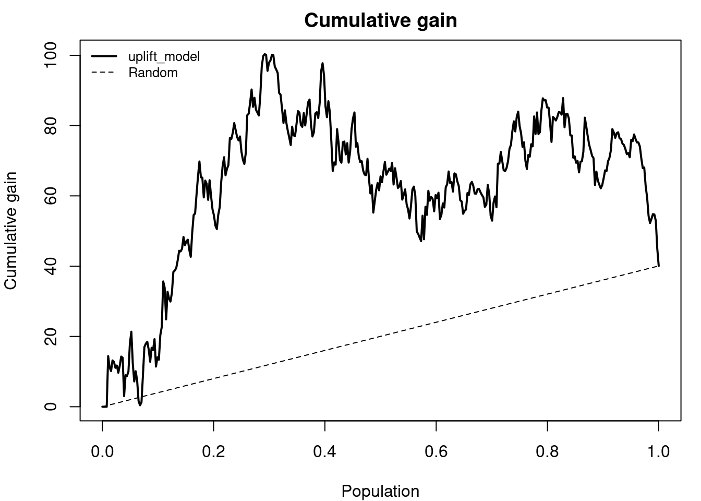
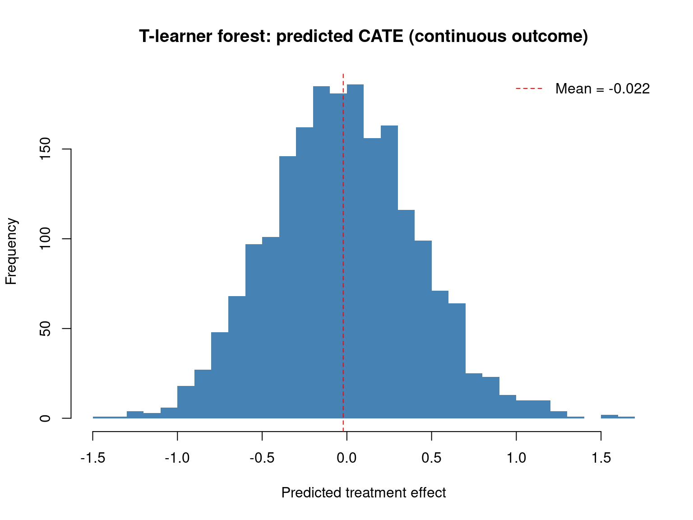
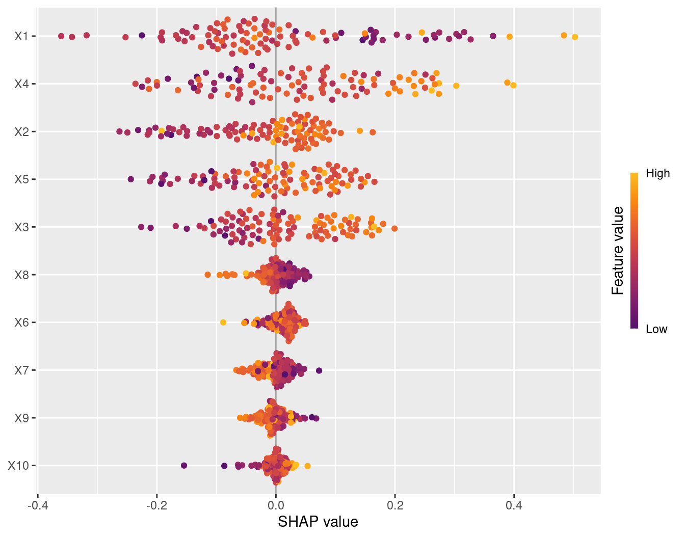
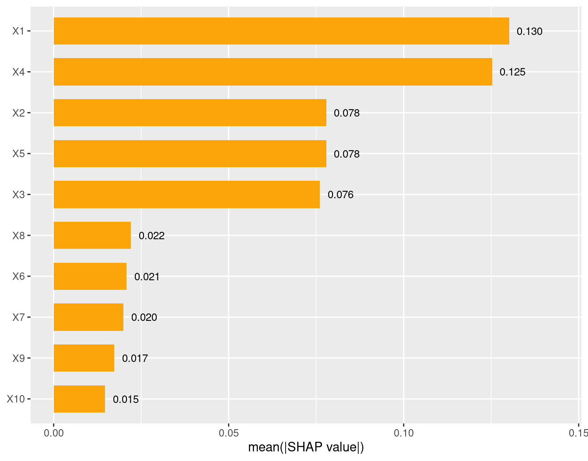
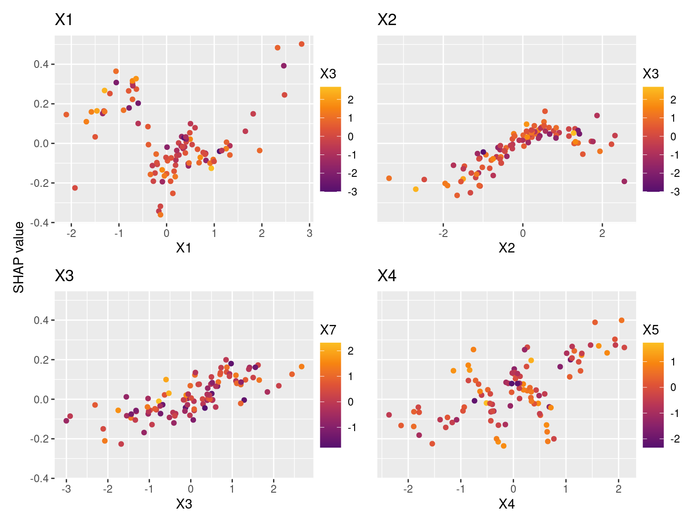
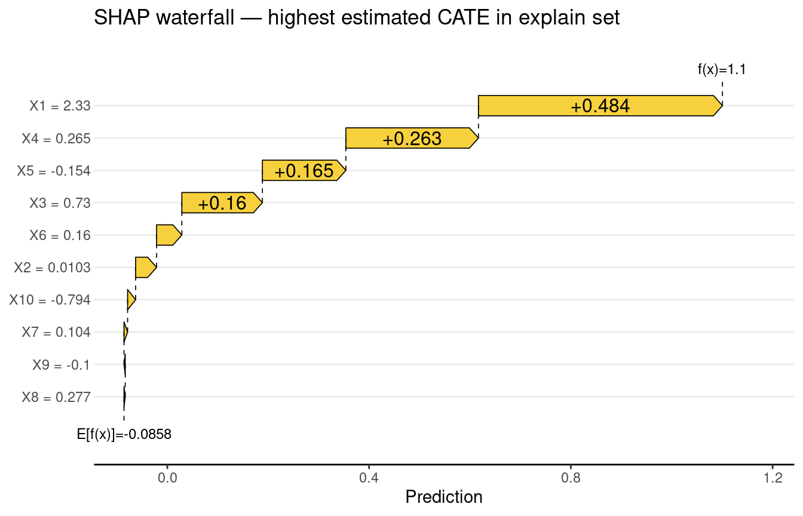
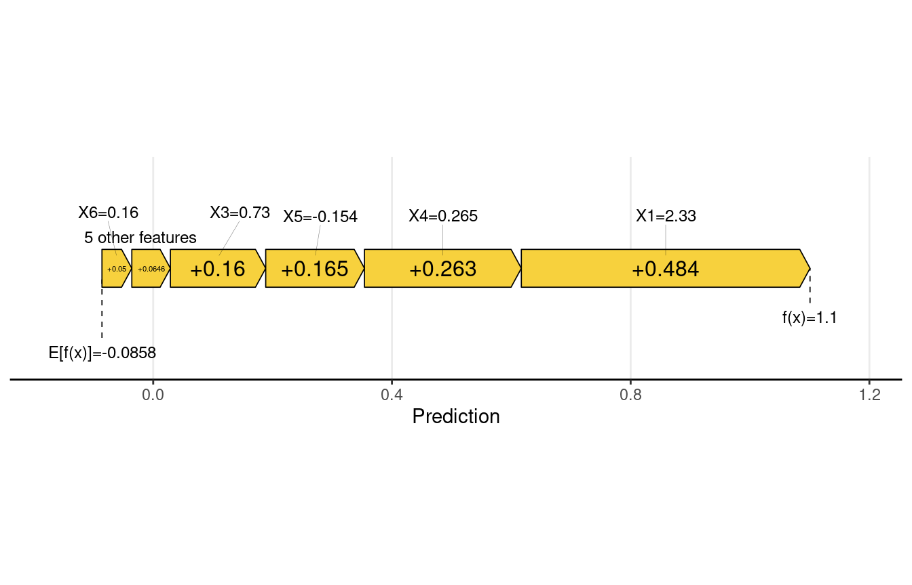

Code
packages <- c(
"tidyverse",
"RCausalML",
"rpart.plot",
"shapviz",
"kernelshap"
)
In this notebook we use synthetic data with a continuous outcome to demonstrate uplift modeling with tree-based methods in R. The workflow mirrors the spirit of the Uplift Trees Example with Synthetic Data from the Python CausalML docs, adapted to RCausalML’s regression behavior.
Uplift modeling with continuous outcomes — often called uplift regression or heterogeneous treatment effect regression — estimates how the causal effect of a treatment varies across individuals when the outcome of interest is a real-valued metric rather than a binary event. Examples include exam scores, revenue per customer, time spent on a platform, blood pressure reduction, or any other quantity that varies continuously across individuals and could plausibly be affected by an intervention.
The estimand is the Conditional Average Treatment Effect:
\[\tau(x) = \mathbb{E}[Y \mid T=1, X=x] - \mathbb{E}[Y \mid T=0, X=x]\]
where \(T=1\) denotes treatment, \(T=0\) control, \(Y \in \mathbb{R}\) the continuous outcome, and \(x\) the individual’s covariate vector. As in the binary case, the goal is to estimate \(\tau(x)\) accurately across the covariate space — but now the effect is a real-valued quantity rather than a probability difference, and the splitting criteria, leaf estimators, and evaluation metrics must be adapted accordingly.
In the binary uplift setting, the tree maximizes divergence between the treated and control outcome distributions within each leaf — a natural criterion when outcomes are categorical. With continuous outcomes, distributional divergence is replaced by criteria that directly measure treatment effect heterogeneity in terms of the conditional mean outcome.
The core logic remains the same: find splits that create child nodes where the within-node treatment effect \(\hat{\tau}(x)\) is as homogeneous and as far from zero as possible, while the between-node treatment effects are as different as possible. What changes is how this is measured. For continuous outcomes, the natural criterion is based on the variance reduction in the treatment effect, or equivalently, on the increase in explained variance of \(Y\) attributable to the treatment-by-covariate interaction after the split.
The standard regression uplift tree criterion evaluates a candidate split \(s\) by the gain in treatment effect variance explained:
\[\text{gain}(s) = \frac{n_\ell}{n} \cdot \hat{\tau}(\phi_\ell)^2 + \frac{n_r}{n} \cdot \hat{\tau}(\phi_r)^2 - \hat{\tau}(\phi)^2\]
where \(\hat{\tau}(\phi_j) = \bar{Y}^{(1)}_{\phi_j} - \bar{Y}^{(0)}_{\phi_j}\) is the difference in sample means between treated and control units in node \(\phi_j\). This criterion selects splits that maximize the weighted sum of squared treatment effects in the children, analogously to how variance reduction in CART maximizes homogeneity of \(Y\) within leaves. A large gain indicates that the split successfully separates individuals with substantially different treatment effect magnitudes.
An alternative formulation evaluates the split by the reduction in mean squared error of the treatment effect:
\[\text{gain}_{\text{MSE}}(s) = \text{MSE}(\phi) - \frac{n_\ell}{n} \cdot \text{MSE}(\phi_\ell) - \frac{n_r}{n} \cdot \text{MSE}(\phi_r)\]
where \(\text{MSE}(\phi_j)\) measures the residual variance of \(Y - \hat{\tau}(\phi_j) \cdot T\) within node \(\phi_j\). This penalizes splits that reduce treatment effect heterogeneity at the cost of poor within-leaf fit.
Each terminal leaf \(\ell\) contains both treated (\(\mathcal{I}_\ell^1\)) and control (\(\mathcal{I}_\ell^0\)) units. The leaf-level CATE estimate is:
\[\hat{\tau}(\ell) = \frac{1}{|\mathcal{I}_\ell^1|} \sum_{i \in \mathcal{I}_\ell^1} Y_i - \frac{1}{|\mathcal{I}_\ell^0|} \sum_{i \in \mathcal{I}_\ell^0} Y_i = \bar{Y}_\ell^{(1)} - \bar{Y}_\ell^{(0)}\]
For a new individual with covariates \(x\), the tree routes them to a leaf \(\ell(x)\) and outputs \(\hat{\tau}(x) = \hat{\tau}(\ell(x))\) as the predicted treatment effect. The prediction is therefore a step function over the covariate space — piecewise constant within each leaf region, and varying discontinuously at split boundaries.
In randomized experiments, this estimator is unbiased for \(\tau(x)\) within each leaf under the assumption that the treatment effect is homogeneous within the leaf. In observational studies, a propensity-score adjustment may be applied within each leaf to correct for residual confounding:
\[\hat{\tau}_{\text{adj}}(\ell) = \sum_{i \in \mathcal{I}_\ell^1} w_i^1 Y_i - \sum_{i \in \mathcal{I}_\ell^0} w_i^0 Y_i\]
where \(w_i^t \propto 1/\hat{e}_t(X_i)\) are inverse propensity weights normalized to sum to one within each arm.
The same three regularization adjustments applied in the classification setting carry over directly:
These adjustments are especially important in the regression setting, where small leaves can produce highly variable \(\bar{Y}^{(1)} - \bar{Y}^{(0)}\) estimates simply due to sampling noise in the continuous outcome.
| Aspect | Classification (Binary \(Y\)) | Regression (Continuous \(Y\)) |
|---|---|---|
| Estimand | \(P(Y=1\mid T=1,X=x) - P(Y=1\mid T=0,X=x)\) | \(\mathbb{E}[Y\mid T=1,X=x] - \mathbb{E}[Y\mid T=0,X=x]\) |
| Split criterion | Distributional divergence (KL, ED, \(\chi^2\)) or CTS | Treatment effect variance gain or MSE reduction |
| Leaf value | Difference in treatment/control proportions | Difference in treatment/control sample means |
| Scale | Probability difference \(\in [-1, 1]\) | Real-valued; scale depends on outcome units |
| Evaluation | Qini curve, uplift AUC | CATE RMSE, treatment effect \(R^2\) |
Consider a tutoring program (treatment) designed to improve student exam scores (continuous outcome). A randomized study assigns students to receive tutoring or not, and an uplift regression tree is fitted to estimate the heterogeneous treatment effect across student profiles.
For a particular student profile \(x\) — defined, say, by prior GPA, study hours per week, and subject difficulty:
This means students with this profile are expected to score 7 points higher on the exam because of the tutoring program — not merely because they are high-achieving students who would score well regardless. A standard regression model predicting exam scores from student characteristics cannot make this distinction; it would assign high predicted scores to high-ability students whether they receive tutoring or not, and would provide no guidance on who benefits most from the intervention.
The uplift tree goes further by partitioning the student population into segments with distinct estimated CATEs. A student in a leaf with \(\hat{\tau}(x) = +12\) benefits substantially from tutoring and should be prioritized for enrollment. A student in a leaf with \(\hat{\tau}(x) = +1\) benefits minimally, and tutoring resources allocated to them may yield greater returns if redirected to higher-uplift students. A student with \(\hat{\tau}(x) < 0\) — perhaps a student who performs worse under the pressure of structured tutoring — would be actively harmed by the program and should be excluded.
This kind of individualized resource allocation, guided by estimated treatment effects rather than predicted outcomes, is the central use case for uplift regression trees in education, healthcare, marketing, and policy settings alike.
For binary outcomes, uplift_rf_kl() and uplift_rf_multi() use divergence-based uplift trees (KL and related criteria). For continuous outcomes, the same entry points fit a T-learner random forest (ranger): separate outcome models under treatment and control, with predicted CATE \(\hat{\tau}(x) = \hat{\mu}_1(x) - \hat{\mu}_0(x)\). That is still a standard uplift / heterogeneous treatment effect estimator, but you no longer get a single KL-split tree per arm from uplift_rf_kl().
To visualize an explicit regression tree on treatment–control contrasts, we use interaction trees (interaction_tree()) and optionally causal inference trees (causal_inference_tree()), which partition on covariates using test statistics for mean outcome differences between arms (see package help: ?interaction_tree, ?causal_inference_tree). We evaluate ranking with cumulative gain (plot_gain()), and use kernel SHAP (kernelshap, shapviz) to explain heterogeneity in predicted uplift, following the same pattern as the classification uplift notebook.
Following R packages are required to run this notebook. If any of these packages are not installed, you can install them using the code below:
tidyverse, RCausalML, rpart.plot, shapviz, kernelshap
packages <- c(
"tidyverse",
"RCausalML",
"rpart.plot",
"shapviz",
"kernelshap"
)# Install missing packages
# new_packages <- packages[!(packages %in% installed.packages()[, "Package"])]
# if (length(new_packages)) install.packages(new_packages)# Load packages with suppressed messages
invisible(lapply(packages, function(pkg) {
suppressPackageStartupMessages(library(pkg, character.only = TRUE))
}))# Check loaded packages
cat("Successfully loaded packages:\n")Successfully loaded packages: [1] "package:kernelshap" "package:shapviz" "package:rpart.plot"
[4] "package:rpart" "package:RCausalML" "package:lubridate"
[7] "package:forcats" "package:stringr" "package:dplyr"
[10] "package:purrr" "package:readr" "package:tidyr"
[13] "package:tibble" "package:ggplot2" "package:tidyverse"
[16] "package:stats" "package:graphics" "package:grDevices"
[19] "package:utils" "package:datasets" "package:methods"
[22] "package:base" We generate data with make_uplift_regression() in R/dataset.R. The construction matches make_uplift_classification() (same feature blocks and treatment-specific uplift structure), but the outcome is continuous: baseline mean plus treatment uplift plus Gaussian noise.
out <- make_uplift_regression(
treatment_name = c("control", "treatment1", "treatment2", "treatment3"),
y_name = "outcome",
n_samples = 4000,
n_regression_features = 10,
n_regression_informative = 5,
n_uplift_increase_dict = list(treatment1 = 5, treatment2 = 5, treatment3 = 5),
n_uplift_decrease_dict = list(treatment1 = 3, treatment2 = 3, treatment3 = 3),
delta_uplift_increase_dict = list(treatment1 = 0.4, treatment2 = 0.6, treatment3 = 0.8),
delta_uplift_decrease_dict = list(treatment1 = -0.35, treatment2 = -0.35, treatment3 = -0.35),
sigma = 1,
random_seed = 111
)
df <- out$data
x_names <- out$X_nameshead(df, 5)Mean outcome and sample size by arm:
agg <- aggregate(outcome ~ treatment_group_key, data = df,
FUN = function(z) c(mean = mean(z), sd = stats::sd(z), size = length(z))
)
agg <- do.call(data.frame, agg)
names(agg) <- c("treatment_group_key", "mean", "sd", "size")
agg <- rbind(
agg,
data.frame(
treatment_group_key = "All",
mean = mean(df$outcome),
sd = stats::sd(df$outcome),
size = nrow(df)
)
)
print(agg) treatment_group_key mean sd size
1 control -0.05219208 1.898807 1017
2 treatment1 -0.02548766 1.918475 975
3 treatment2 -0.12231197 1.905494 1019
4 treatment3 0.10276770 1.987767 989
5 All -0.02523211 1.928623 4000uplift_rf_multi() fits one uplift_rf_kl() object per non-control arm (control vs treatment_k). With a continuous outcome, each of those is a T-learner ranger ensemble, not a KL uplift tree forest.
For regression, “n_trees = 1” means one tree in each ranger model (treated and control) for that arm—useful for a fast sanity check, not for production accuracy.
clf_shallow <- uplift_rf_multi(
as.matrix(df_train[, x_names]),
df_train$treatment_group_key,
df_train$outcome,
control_name = "control",
n_trees = 1,
min_node_size = 100,
max_depth = 4
)
X_test <- as.matrix(df_test[, x_names])
p_shallow <- predict(clf_shallow, X_test, full_output = TRUE)
df_res_shallow <- p_shallow[, c("control", clf_shallow$treatment_names), drop = FALSE]
head(df_res_shallow, 5)Here control and treatment* columns are predicted mean outcomes \(\hat{\mu}_0(x)\) and \(\hat{\mu}_k(x)\) under that arm’s training subsample (stacked control-vs-\(k\)), not probabilities.
uplift_model <- uplift_rf_multi(
as.matrix(df_train[, x_names]),
df_train$treatment_group_key,
df_train$outcome,
control_name = "control",
n_trees = 50,
min_node_size = 50,
max_depth = 8
)
df_res <- predict(uplift_model, X_test, full_output = TRUE)
cat("Shape:", nrow(df_res), "x", ncol(df_res), "\n")Shape: 800 x 9 head(df_res)Predicted uplift matrix (columns = treatment arms, entries = \(\hat{\mu}_k(x) - \hat{\mu}_0(x)\) for that arm’s model):
y_pred <- predict(uplift_model, X_test)
result <- as.data.frame(y_pred)
names(result) <- uplift_model$treatment_names
head(result)As in the classification notebook, we build a synthetic subpopulation (units assigned to the model’s best arm or to control), then plot cumulative gain using observed mean outcome contrasts sorted by predicted uplift.
uplift_cols <- uplift_model$treatment_names
best_treatment <- ifelse(
apply(result[uplift_cols], 1, function(r) all(r < 0)),
"control",
uplift_cols[apply(result[uplift_cols], 1, which.max)]
)
actual_is_best <- as.integer(df_test$treatment_group_key == best_treatment)
actual_is_control <- as.integer(df_test$treatment_group_key == "control")synthetic <- (actual_is_best == 1) | (actual_is_control == 1)
synth <- result[synthetic, , drop = FALSE]plot_gain(auuc_metrics, outcome_col = "outcome", treatment_col = "is_treated")
For a single transparent tree with a continuous outcome, fit an interaction tree (or CIT) on the subset with only control and one treatment. These methods split to maximize evidence of heterogeneous treatment effects on the mean outcome (not KL divergence on probabilities).
set.seed(111)
df_bin <- df[df$treatment_group_key %in% c("control", "treatment1"), ]
df_bin$w_bin <- as.integer(df_bin$treatment_group_key != "control")
X_all <- as.matrix(df_bin[, x_names])
colnames(X_all) <- x_names
y_all <- df_bin$outcome
w_all <- df_bin$w_bin
idx_bin <- sample(nrow(X_all), size = floor(0.8 * nrow(X_all)))
X_train <- X_all[idx_bin, , drop = FALSE]
y_train <- y_all[idx_bin]
w_train <- w_all[idx_bin]
X_test <- X_all[-idx_bin, , drop = FALSE]
y_test <- y_all[-idx_bin]
w_test <- w_all[-idx_bin]it_fit <- interaction_tree(
X_train, w_train, y_train,
min_node_size = 200,
max_depth = 4
)
cat(uplift_tree_string(it_fit$tree, it_fit$X_names))X8 >= 0.5585?
yes -> X2 >= 0.0073?
yes -> [tau=0.0599, n=239]
no -> [tau=-0.6386, n=239]
no -> X4 >= -0.0770?
yes -> X7 >= -0.0516?
yes -> [tau=-0.0354, n=279]
no -> [tau=0.7009, n=279]
no -> X4 >= -0.7012?
yes -> [tau=-0.3563, n=279]
no -> [tau=0.0380, n=278]Leaf labels show \(\tau \approx \mathbb{E}[Y \mid T{=}1] - \mathbb{E}[Y \mid T{=}0]\) in that region.
uplift_tree_plot(it_fit, main = "Interaction tree — continuous outcome (control vs treatment1)")
cit_fit <- causal_inference_tree(
X_train, w_train, y_train,
min_node_size = 200,
max_depth = 4
)
uplift_tree_plot(cit_fit, main = "Causal inference tree (CIT) — continuous outcome")
uplift_rf_kl() on continuous data fits a T-learner ranger; use it for accurate CATE on the binary sample and compare train/test means.
Mean predicted CATE — train: -0.0548 test: -0.0401 Note: There is no forest$trees list for this object, so uplift_forest_plot() does not apply. Use variable importance from ranger or SHAP on the predicted CATE instead.
As in the classification notebook, we can code any non-control as treated and fit one interaction tree to summarize heterogeneity in the average lift of treatment packages vs control on the continuous outcome.
out_multi <- make_uplift_regression(
treatment_name = c("control", "treatment1", "treatment2", "treatment3"),
y_name = "outcome",
n_samples = 4000,
n_regression_features = 10,
n_regression_informative = 5,
n_uplift_increase_dict = list(treatment1 = 5, treatment2 = 5, treatment3 = 5),
n_uplift_decrease_dict = list(treatment1 = 3, treatment2 = 3, treatment3 = 3),
delta_uplift_increase_dict = list(treatment1 = 0.4, treatment2 = 0.6, treatment3 = 0.8),
delta_uplift_decrease_dict = list(treatment1 = -0.35, treatment2 = -0.35, treatment3 = -0.35),
sigma = 1,
random_seed = 111
)
df_multi <- out_multi$data
X_names_multi <- out_multi$X_namesit_multi <- interaction_tree(
X_multi[idx_m, ], w_multi[idx_m], y_multi[idx_m],
min_node_size = 200,
max_depth = 3
)uplift_tree_plot(
it_multi,
main = "Interaction tree: any treatment vs control (continuous outcome)"
)
uf <- uplift_rf_kl(
X_all, w_all, y_all,
n_trees = 80,
min_node_size = 40,
max_depth = 8
)
pred_cate <- predict(uf, X_all)hist(
pred_cate,
breaks = 30,
main = "T-learner forest: predicted CATE (continuous outcome)",
xlab = "Predicted treatment effect",
col = "steelblue",
border = NA
)
abline(v = mean(pred_cate), lty = 2, col = "red")
legend("topright", legend = sprintf("Mean = %.3f", mean(pred_cate)), lty = 2, col = "red", bty = "n")
We explain \(\hat{\tau}(X)\) from the binary T-learner uplift_bin_rf on a subset of the training data (full training rows can be slow).
set.seed(2026)
n_explain <- min(100L, nrow(X_train))
bg_size <- min(100L, nrow(X_train))
X_explain <- X_train[seq_len(n_explain), , drop = FALSE]
bg_idx <- sample.int(nrow(X_train), bg_size)
bg_X <- X_train[bg_idx, , drop = FALSE]
pred_fun <- function(object, newdata) {
as.vector(predict(object, newdata))
}
library(future)
plan(multisession, workers = parallel::detectCores() - 1)
shap_ksh <- kernelshap(
object = uplift_bin_rf,
X = X_explain,
bg_X = bg_X,
pred_fun = pred_fun,
bg_w = NULL,
verbose = FALSE
)
plan(sequential) # reset after
shp_uplift <- shapviz(shap_ksh, X = X_explain)sv_importance(shp_uplift, kind = "beeswarm")
sv_importance(shp_uplift, show_numbers = TRUE)

if (length(x_names) >= 2) {
sv_dependence(shp_uplift, v = x_names[[2]], color_var = x_names[[1]])
}

sv_force(shp_uplift, row_id = row_id_max)
With continuous outcomes, uplift_rf_multi() and uplift_rf_kl() in RCausalML implement T-learner random forests (per arm or binary), while interaction trees and CIT give explicit partition rules for treatment effect heterogeneity on the mean. Cumulative gain curves and SHAP extend directly from the classification uplift tutorial, with outcome column outcome instead of conversion.